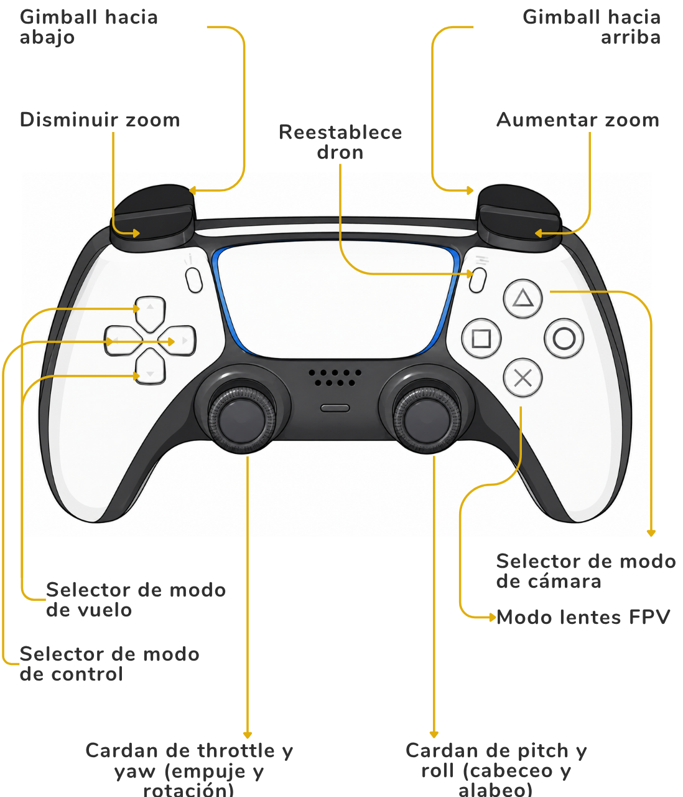
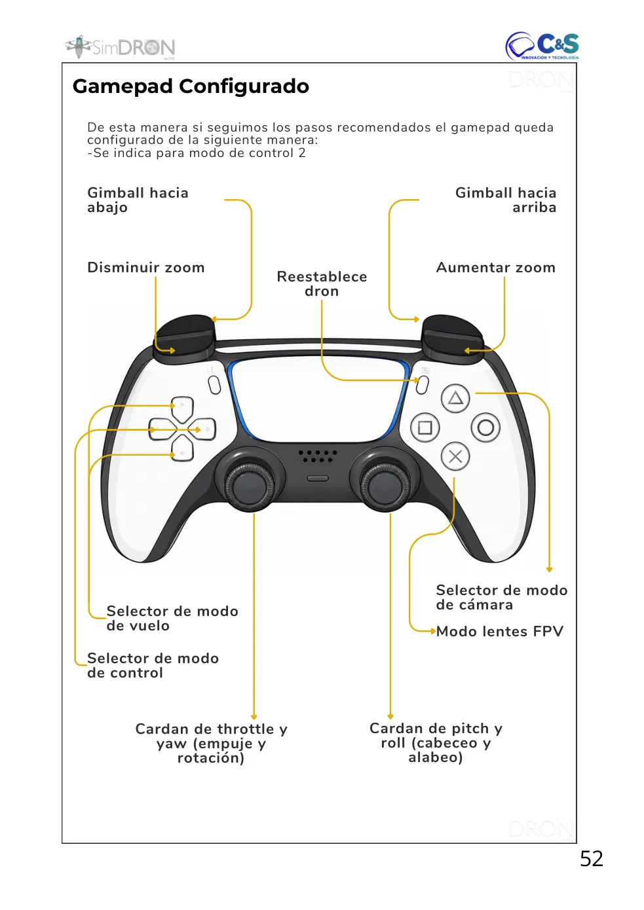

Documentación / SimDron VR / 04 · Interacción y controles
Gamepad configurado (modo 2)
Guía de consulta basada en el manual original. Las páginas del PDF se abren en otra pestaña y las capturas pueden consultarse sin perder tu lugar.
PÁGINA 52 Gamepad Configurado

Ver recorte anterior de la página (referencia)

De esta manera si seguimos los pasos recomendados el gamepad queda configurado de la siguiente manera: -Se indica para modo de control 2
Aumentar zoom Disminuir zoom
Selector de modo de cámara
Selector de modo de vuelo
Selector de modo de control
Cardan de pitch y
Cardan de throttle y
Referencia original: PDF · pág. 52Abrir página del PDF